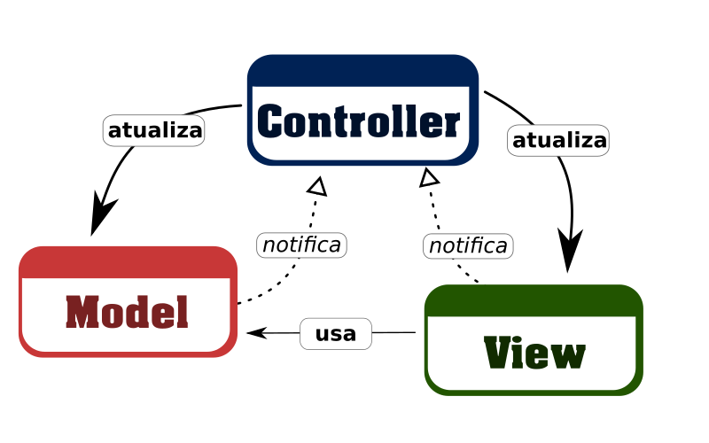

O padrão MVC
Não vou aqui tentar explicar o que é o padrão MVC em si. Você pode saber mais aqui na Wikipédia. Aqui eu só vou fazer alguns comentários e mostrar como usamos esse padrão em nossas aplicações jQuery com o auxílio da jQuery TOAD.
Quem programa para back-end primariamente e desenvolve front-end só de vez em quando, vai tentar relacionar imediatamente o assunto com o que sabe do seu Framework MVC preferido, ASP.NET MVC para os de .NET, Sprint MVC para os de Java, Laravel para os de PHP, e etc.
É bom já conhecer do assunto, mas ao mesmo tempo, cuidado para não confundir as coisas.
O que queremos apresentar aqui é a base de tudo, a essência, e como podemos adotar o padrão MVC para separar as responsabilidades de nossa aplicação jQuery.
Uma outra coisa que vale à pena ressaltar é que: Quando falamos em desenvolvimento front-end, e mencionamos o padrão MVC, se lembra logo dos frameworks/bibliotecas de SPA, como Angular, VueJS e Ember. Mas não estamos falando de SPA aqui. Esses Frameworks/bibliotecas tem muito mais recursos além do MVC que proporcionam o desenvolvimento de aplicações SPA ricas. E muitas pessoas usam os recursos sem por vezes nunca ter entendido o que é MVC na prática, e não saberiam desenvolver uma aplicação front-end só com jQuery ou com puro JavaScript e organizar sua arquitetura seguindo o padrão MVC.
Um pouco de teoria
Você pode desenvolver uma aplicação usando o padrão MVC sem precisar de um Framework para isso.
Visto que o MVC é um padrão de arquitetura que se utiliza do modelo em camadas para organizar suas peças, e que define explicitamente 3 (três camadas), são elas:
- Model (modelo)
- View (visão)
- Controller (controlador)
O desenho que melhor representa o modelo ao meu ver é esse:
Aqui o mais importante não é você saber em que camada fica o código que o usuário vê (view) ou onde ficam seus objetos de modelo (model), e etc. O mais importante é você saber como as camadas interagem entre si.
Esteja atento as setas:

Essa seta indica que uma camada é a responsável por atualizar o conteúdo de outra camada. Em outras palavras, tem o controle da outra camada (por isso a seta sólida).
Essa seta indica que uma camada é responsável por notificar ações e mudanças que ocorreram em seu conteúdo a outra camada. E que não conhece nem tem controle sobre a outra (por isso a seta tracejada).
Vejamos então as responsabilidade de cada camada:
Model
A camada de modelo é a responsável por notificar a camada Controller de qualquer mudança em seu conteúdo. Essa é controlada exclusivamente pela camada Controller.
View
A camada de visão é a responsável por notificar a camada Controller de qualquer interação em seu conteúdo. Essa é controlada exclusivamente pela camada Controller.
Controller
A camada de controle é a responsável por atualizar a camada Model e View. Também é a responsável por direcionar o fluxo entre as interações na camada de visão e as mudanças na camada de modelo. Em outras palavras: "Controla o fluxo de tudo".
De que vale essa teoria?
Sei que a teoria apresentada na seção anterior, parece um pouco mais do de sempre. Mas eu só queria deixar nessa mesma página, essas definições e essa imagem simples para que possamos extrair o que realmente interessa à partir desse ponto.
Essa teoria não serve de nada se você não consegue aplicá-la em seus projetos. E você consegue usar MVC em projetos jQuery e/ou JavaScript puro se simplesmente não violar as regras que o MVC impõe.
E que regras são essas?
Regra 1: Um modelo não atualiza a visão quando sofre alteração. Ao invés disso, notifica o controlador para que ele decida o que fazer.
Regra 2: Uma visão não altera o estado do modelo quando o usuário interage pedindo isso. Ao invés disso, notifica o controlador para que ele decida o que fazer.
Vamos pegar um exemplo bem simples e mostrar como seria construí-lo quebrando as regras do MVC, e como seria construí-lo NÃO quebrando as regras do MVC.
O exemplo é esse, um formulário com um campo para você informar um nome de usuário do GitHub, e uma imagem que mostra o avatar do usuário no GitHub. A lógica é: sempre que ouver interação com o campo do nome do usuário, a parte de visão do avatar seja atualizado pra condizer a informação.
Você que já conhece e usa jQuery no seu dia-a-dia, sabe que consegue construir essa funcionalidade facilmente com um código parecido com esse: